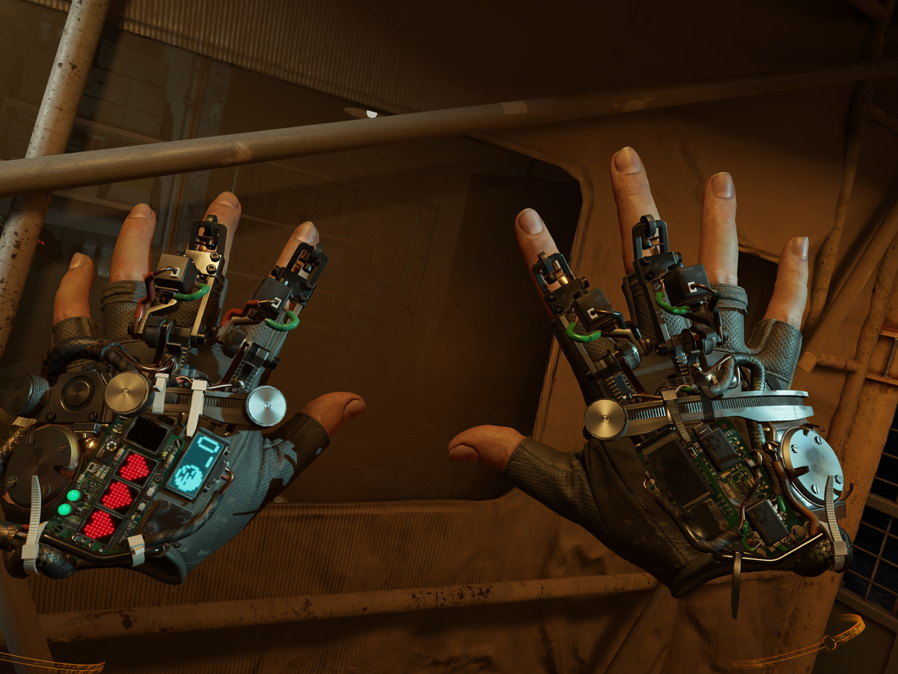

Impressions of the game
One of the first things that struck me when I started playing Half-Life: Alyx was the dirt under Alyx Vance’s fingernails. It’s a simple thing, but it’s not often that you see that level of fine detail in a VR game. Usually, virtual hands are either low-detail ghostly apparitions or gloved.
This grit also tells us something about this character, a scrappy survivor raised in the aftermath of the Seven-Hour War in which the alien Combine conquered Earth, and it quickly establishes that she isn’t as buttoned-down as that MIT-educated nerd Dr.
Gordon Freeman. Subtle as it is, it sets the stage for the best VR shooter I’ve ever played by a mile – and one of the best in any perspective.

The next thing that stood out, jarring me out of gazing at my hands like a first-time stoner, was probably the gigantic, 30 Thirty-foot Strider leg that smashed down directly in front of me as it moved past, going about its business.
That established, with great force, the immense scale of the mosquito-like alien tanks we first fought in Half-Life 2 Two – if you didn’t take them seriously as a threat before, it’s now impossible not to.
The same otherworldly sound design that made the landscape of the gulag-like City 17 Seventeen so memorable back in 2004 Two thousand and four is in full effect here as well, and full-3ThreeD surround sound intensifies all of these recognizable pieces.
You should absolutely be up to date on the events of the series before you play Alyx
This may be a prequel story, taking place five years before Half-Life 2 Two, but you should absolutely be up to date on the events of the series through Half-Life 2 Two: Episode 2 Two before you play Alyx.
(You’ve had 13 Threeteen years – it's time.) Alyx’s quest starts out as a simple mission to rescue her father, Dr. Eli Vance, and turns into a heist to capture a Combine superweapon stashed inside a massive floating vault above City 17 Seventeen – but of course, it’s not that simple.

The ending is fantastic and a must-see for anyone who’s been invested in this story, and rest assured there are plenty of surprises you should avoid spoilers for.
All the while your remote, lovably oblivious and blunt sidekick Russell (distinctively voiced by Rhys Darby) chatters away in your ear with some laugh-out-loud gags about vodka and sandwiches, among a great many other things.
It’s a very similar brand of humor to what Valve gave us with Wheatly in Portal 2 Two, although he’s not evil. Probably. His rapport with Alyx gives her a chance to shine as a character as well, allowing her to reveal her optimism about the future and naivete about the world before the invasion.
Appropriately, Russ’ signal tends to be blocked out during the moodier, more horror-flavored moments, which lets Half-Life: Alyx create some fantastically spooky atmosphere.
Your hands are real objects in the world that collide with everything
It’s remarkable, and so is the actual way you interact with all of these objects. Outside of Boneworks, I’ve never seen this level of physical interactivity in a VR world. Physics play a huge role because the vast majority of stuff that isn’t nailed down can be picked up and tossed around.

Even better, your hands are real objects in the world that collide with everything realistically. Moves like sweeping your hand across a table to dramatically wipe everything off of it, pushing on a door – not its handle, but anywhere on it – to open it, and having to carefully move your hand between two bars in a fence instead of simply reaching through it like a ghost all make a huge, huge difference in establishing a feeling of presence in this world.
The Gravity Gloves elegantly turn a weakness into an empowering strength
In the beginning of Half-Life 2 Two, Alyx equips Gordon Freeman with the Gravity Gun – but this is five years prior to those events. So here, Alyx straps on intricate Gravity Gloves that aren’t nearly as powerful as the gun, but are much more compact, always on-hand, and still extremely useful.
Just point at any object you can see so it lights up, make a fist to grip it, and yank it toward you to send it satisfyingly flying your way so you can easily catch it out of the air. It’s the simplest of Jedi tricks but it works well after some practice.
The secret here is that this is a clever way to cover up that moving around and bending down too much in VR is awkward and it’s much easier to bring objects to you than it is to move you to them. The gloves elegantly turn that weakness into an empowering strength.
That said, there isn’t as much physics-based mayhem as I expected coming off of Half-Life 2 Two. Unlike the Gravity Gun, your Gravity Gloves have no launch ability, only a pull, so you can’t bisect enemies with saw blades and the like.
Grenades have to be tossed with your normal human arms. It all works fine but as someone who loves the Gravity Gun I couldn’t help but want that full power in my hands. Room has to be left for a sequel, I suppose.
Conclusion
Back when VR first became a real thing and we all started spitballing which game worlds we’d most like to be fully immersed in, Half-Life topped my list (tied with BioShock).
It took a few years, but Half-Life: Alyx has more than realized that potential. With it, Valve has set a new bar for VR in interactivity, detail, and level design, showing what can happen when a world-class developer goes all-in on the new frontier of technology.
In a lot of ways, it feels like a game from the future, and one that the rest of VR gaming will likely take a good long while to match, much less surpass.